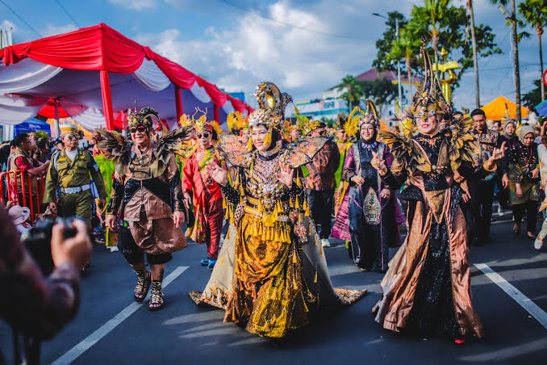
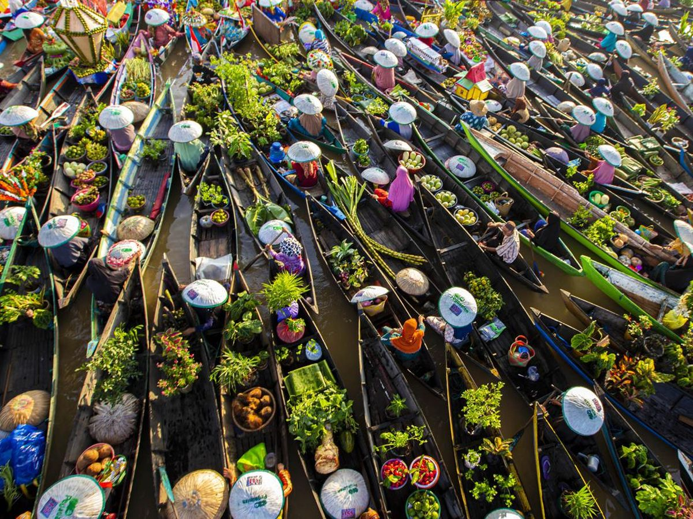
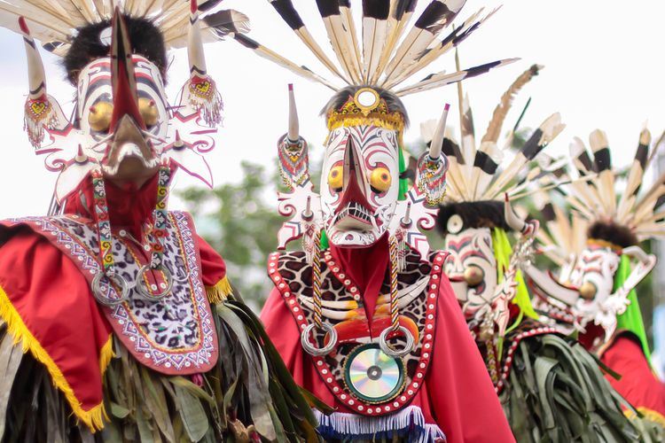

CULTURAL MAP
Jelajahi seni dan warisan budaya Indonesia, dari satu daerah ke daerah lainnya.


Jakarta
Kota Tua
Kota Tua Jakarta adalah kawasan bersejarah yang dahulu menjadi pusat pemerintahan dan perdagangan pada masa kolonial Belanda, dikenal sebagai Batavia. Kawasan ini memiliki berbagai bangunan tua bergaya Eropa, seperti Museum Fatahillah, Museum Wayang, dan Jembatan Kota Intan.
View on Google Maps

Bali
Pesta Kesenian Bali
Pesta Kesenian Bali adalah festival tahunan yang menampilkan berbagai kesenian tradisional Bali, seperti tari, musik, dan kerajinan. Acara ini menjadi salah satu festival budaya terbesar di Bali.
View on Google Maps

Yogyakarta
Sendratari Ramayana Prambanan
Sendratari Ramayana Prambanan adalah pertunjukan yang menggabungkan tari dan musik untuk menceritakan kisah Ramayana. Pertunjukan ini terkenal karena diselenggarakan dengan latar belakang Candi Prambanan.
View on Google Maps

Magelang
Candi Borobudur
Candi Borobudur adalah candi Buddha di Magelang, Jawa Tengah, yang dibangun pada masa Kerajaan Syailendra. Candi ini memiliki banyak stupa dan relief serta menjadi salah satu situs Warisan Dunia UNESCO.
View on Google Maps

Tana Toraja
Rambu Solo
Rambu Solo adalah upacara adat masyarakat Toraja di Sulawesi Selatan yang berkaitan dengan penghormatan dan pemakaman orang yang telah meninggal. Upacara ini biasanya dilakukan dengan berbagai rangkaian ritual, pertunjukan budaya, dan penyembelihan hewan sebagai bagian dari tradisi masyarakat Toraja. Rambu Solo menjadi salah satu tradisi Toraja yang masih dilaksanakan dan dikenal hingga sekarang.
View on Google Maps

Padang
Rendang Minangkabau
Rendang Minangkabau adalah makanan tradisional khas masyarakat Minangkabau, Sumatera Barat, yang dikenal dengan cita rasanya yang kaya dan bumbu rempah yang kuat. Makanan ini biasanya dibuat dari daging sapi yang dimasak dalam santan dan berbagai rempah hingga kuahnya mengering dan bumbunya meresap. Rendang juga dikenal sebagai salah satu makanan Indonesia yang populer hingga mancanegara.
View on Google Maps

Papua Pegunungan
Lembah Baliem
Lembah Baliem adalah kawasan pegunungan di Papua yang menjadi tempat tinggal berbagai suku asli, termasuk suku Dani. Wilayah ini dikenal dengan pemandangan alam serta tradisi budaya masyarakatnya yang masih terjaga.
View on Google Maps

Jember
Jember Fashion Carnaval
Jember Fashion Carnaval adalah acara tahunan di Jember yang menampilkan parade busana kreatif dan penuh warna. Kostum para peserta dibuat berdasarkan berbagai tema dan budaya.
View on Google Maps

Kalimantan Selatan
Pasar Terapung Lok Baintan
Pasar Terapung Lok Baintan adalah pasar tradisional di Kalimantan Selatan yang aktivitas jual belinya dilakukan di atas perahu. Pasar ini menjual berbagai kebutuhan dan menjadi salah satu ciri khas budaya masyarakat setempat.
View on Google Maps

Kalimantan Timur
Tari Hudoq
Tari Hudoq adalah tarian tradisional masyarakat Dayak di Kalimantan Timur yang menggunakan topeng dan kostum khas. Tarian ini biasanya ditampilkan dalam upacara adat yang berkaitan dengan pertanian.
View on Google Maps

Medan
Tip Top Restaurant
Tip Top Restaurant adalah restoran bersejarah di Medan, Sumatera Utara, yang telah berdiri sejak masa kolonial Belanda. Restoran ini dikenal dengan bangunan bergaya kolonial dan berbagai hidangan tradisionalnya.
View on Google Maps

Sulawesi Selatan
Konro Karebosi
Konro adalah makanan khas Bugis dan Makassar di Sulawesi Selatan yang menggunakan iga sapi dan berbagai rempah sebagai bahan utama. Hidangan ini biasanya disajikan sebagai sup atau konro bakar.
View on Google MapsPeta budaya ini mengajak kamu menjelajahi kekayaan seni dan budaya Indonesia dari berbagai daerah. Setiap pin pada peta menandai satu lokasi yang memiliki cerita budayanya sendiri, mulai dari adat istiadat, kuliner khas, tempat bersejarah, hingga seni tradisional. Cukup klik salah satu pin, dan kamu akan langsung diarahkan ke halaman berita yang membahas budaya dari daerah tersebut.